Подготовка. Необходимо заранее скачать карту и загрузить ее на компьютер тьютора.
Если вы впервые имеете дело с Minecraft Edu, советую ознакомиться с инструкциями от УК (папка Доп Файлы)
Для того чтобы загрузить карту, проделайте следующее:
Запускаем программу запуска сервера
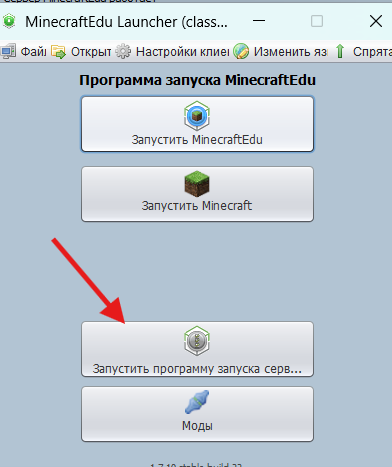
Выбрать сохраненный мир
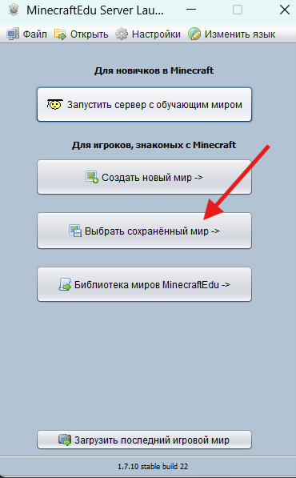
Нажимаем настройки и затем посмотреть папки
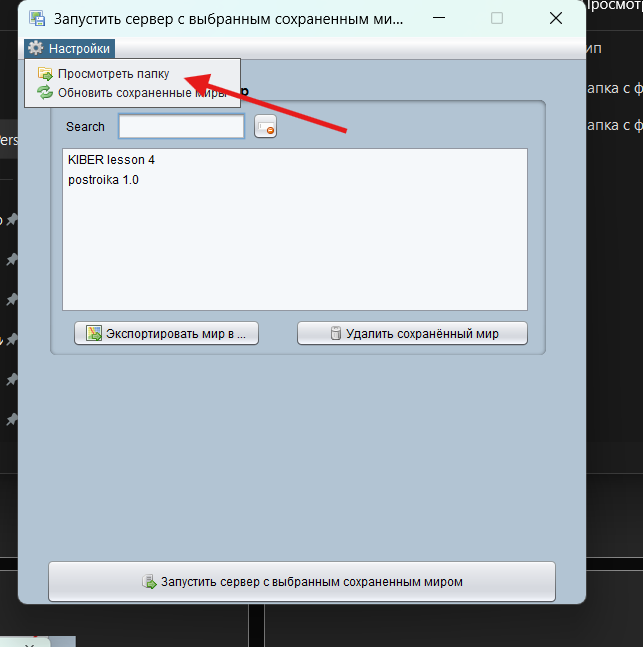
Экспортируем туда скачанный архив KIBER lesson 4, снова нажимаем Настройки и нажимаем обновить сохраненные миры, у нас появится карта
Теория
CraftOS 1.7 — это версия операционной системы внутри игры ComputerCraft, которая работает в Minecraft на “виртуальных компьютерах”.
📌 Что это такое простыми словами
CraftOS 1.7 — это как “мини-компьютер внутри Minecraft”, где ты можешь:
писать программы на Lua
создавать игры (кликеры, угадай число и т.д.)
управлять блоками через код
запускать скрипты прямо в игре
🧠 Что в нём есть
терминал (как командная строка)
файловая система (можно создавать файлы .lua)
редактор кода (edit)
запуск программ (run)
язык программирования Lua
💡 Особенности версии 1.7
стабильная старая версия ComputerCraft
простая и лёгкая для обучения
часто используется в туториалах и школах программирования в Minecraft
нет многих “новых фич” из более поздних версий (CC:Tweaked)
🧩 Как выглядит работа
Ты пишешь:
edit gameПотом код на Lua, сохраняешь и запускаешь:
game🎯 Итог
CraftOS 1.7 — это учебная “операционная система” в Minecraft, которая учит программированию через игры и скрипты.
Lua — это лёгкий и быстрый язык программирования, который часто используют в играх и встроенных системах.
📌 Что такое Lua простыми словами
Lua — это язык, на котором ты пишешь команды для управления программой или игрой. Он очень простой по синтаксису и идеально подходит для новичков.
🎮 Где используется Lua
Roblox Studio — основной язык скриптов
ComputerCraft — программирование компьютеров в Minecraft
игровые движки (например, Love2D)
моды и встроенные системы в играх
🧠 Особенности языка
очень простой синтаксис (почти как английский)
нет сложных типов как в C++ или Java
легко учиться
подходит для создания игр и скриптов
💡 Пример Lua кода
print("Hello World")👉 просто выводит текст
🎯 Итог
Lua — это простой язык программирования, который часто используют в играх и виртуальных системах. Он идеально подходит для старта.
Практика
Для начала можно дать детям время немного погулять по карте. Если вы ранее были не знакомы с данным модулем, поизучайте меню администратора, которая открывается через кнопку M, можно попросить открыть модуль Minecraft Education от УК и поизучать первый урок
На карте есть 1 телепорт, который телепортирует в лагерь, на котором дети будут программировать
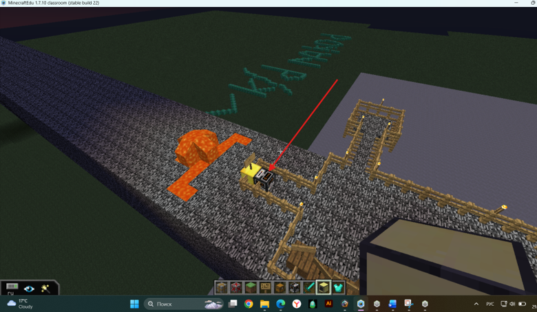
Нажмите на телепорт и выберите точку телепорта
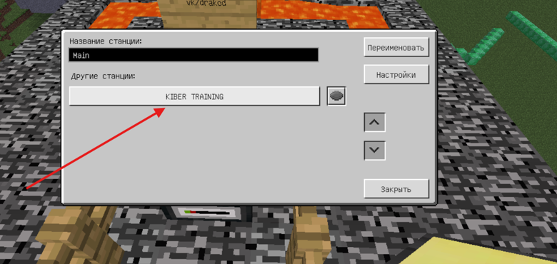
Телепортируйте каждого ребенка в отдельный квадрат, они не смогут покинуть его
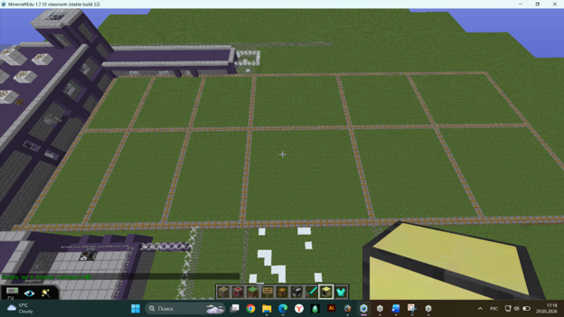
Раздайте всем детям Advanced Computer и пусть они поставят его на своей территории. Ломать его ни в коем случае нельзя, иначе вся программа которую они будут писать, она удалится, поэтому лучше заранее отключить им возможность строить и ломать через панель администратора
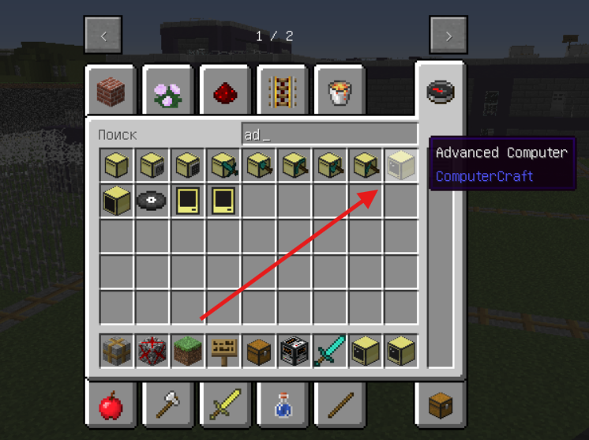
Путем нажатия ПКМ пусть откроют Компьютер, расскажите про ОС
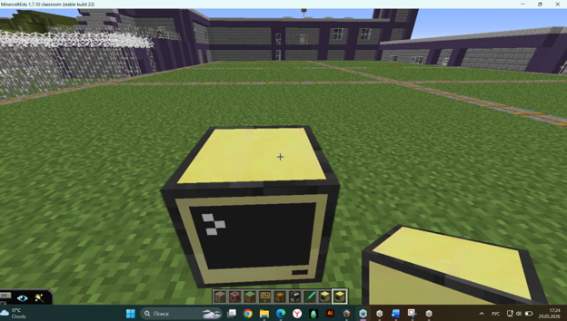
Теперь создадим 2 игры
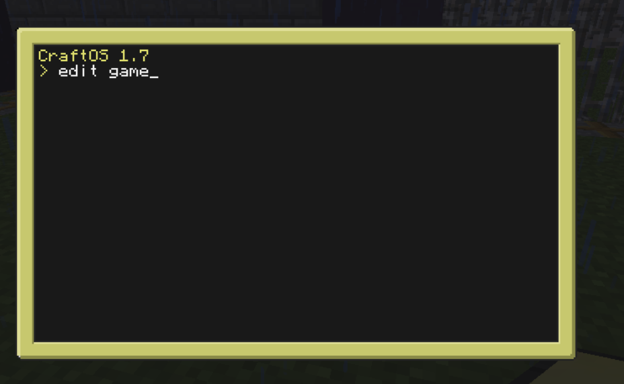
Чтобы создать файл наберите команду edit и напишите название файла
Протестируйте работоспособность программы, путем легкого примера и команды print
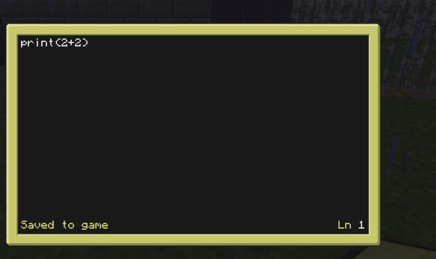
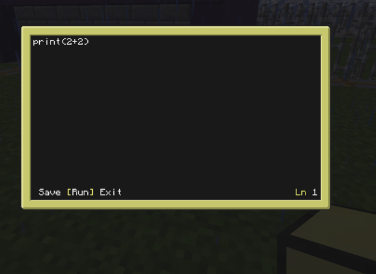
Нажмите ctrl, появятся 3 кнопки, выберите Run и нажмите на Enter
Убедитесь, что программа работает
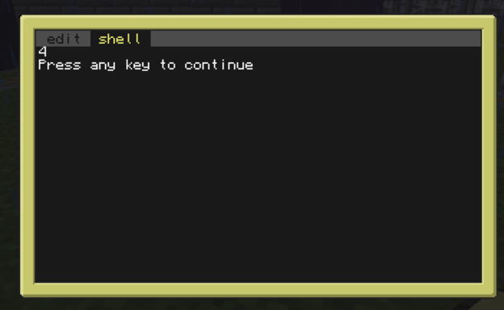
Теперь вернитесь в вкладку edit, удалите старый код и напишите программу для игры Угадай число.
math.randomseed(os.time()) -- задаёт случайное “зерно”, чтобы число каждый раз было разным
math.random() -- “разогрев” генератора случайных чисел (чтобы убрать повтор одинаковых значений)
local secret = math.random(1,100) -- загадываем число от 1 до 100
local tries = 0 -- счётчик попыток игрока
print("Guess Number 1-100") -- сообщение игроку
while true do -- бесконечный цикл игры (пока не угадают число)
write("Number: ") -- приглашение к вводу без переноса строки
local guess = tonumber(read()) -- читаем ввод игрока и превращаем в число
tries = tries + 1 -- увеличиваем количество попыток
if guess < secret then -- если число меньше загаданного
print("Less") -- нужно большее число
elseif guess > secret then -- если число больше загаданного
print("More") -- нужно меньшее число
else -- если число угадано
print("Win!") -- победа
print("Attempts: ", tries) -- вывод количества попыток
break -- выход из цикла (конец игры)
end
end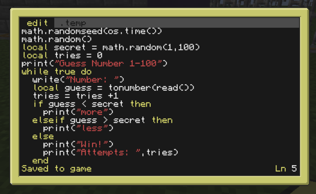
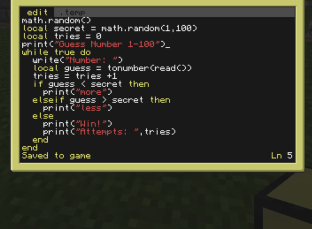
Дети, которые пишут долго, нужно им помочь, также можно пользоваться клавишей Tab, чтобы компьютер дописывал за тебя
Тестируем. Можно сделать конкурс по угадыванию числа за меньшее количество попыток
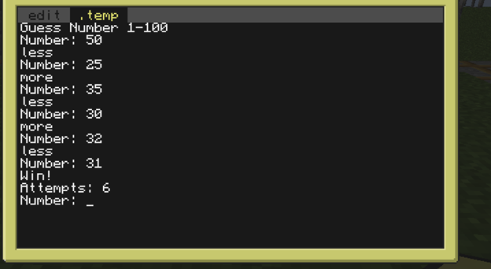
Если останется время, можно сделать простенький кликер
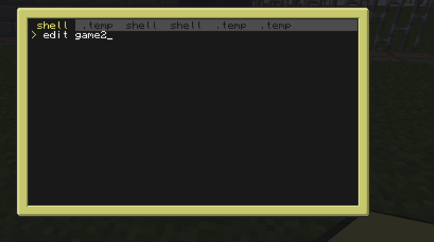
local money = 0 -- создаём переменную денег, стартовое значение 0
while true do -- бесконечный цикл (игра работает постоянно)
print("=== CLICKER ===") -- заголовок игры
print("Money: ", money) -- вывод текущего количества денег
print("") -- пустая строка для отступа
print("Press ENTER to earn money") -- подсказка игроку
read() -- ждём нажатия ENTER (ввод без использования значения)
money = money + 1 -- добавляем 1 монету за каждое нажатие
end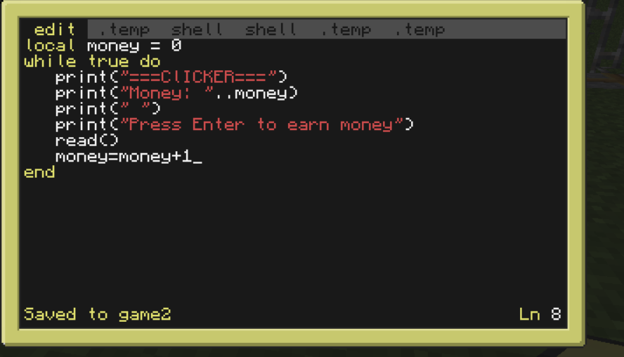
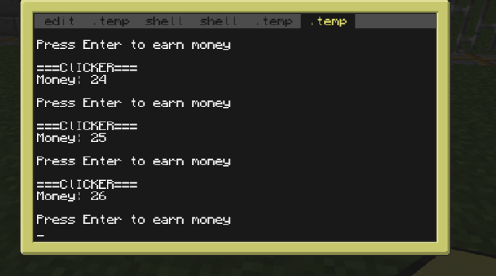
🧾 Итоги урока
На этом уроке ученики познакомились с основами программирования на языке Lua и научились работать в среде ComputerCraft, которая позволяет создавать программы прямо внутри Minecraft.
📌 Что узнали ученики
что такое язык программирования Lua и где он используется
как выводить текст в консоль с помощью print()
как работать с переменными (local money = 0)
как принимать ввод от пользователя (read())
как использовать условия (if / elseif / else)
как создавать циклы (while true do)
как писать простые игры (кликер, угадай число)
💻 Что сделали на практике
написали игру “Угадай число”
создали кликер-игру с монетами
научились запускать программы в CraftOS
потренировались вводить и обрабатывать данные
🎯 Чему научились в итоге
понимать базовую логику программирования
писать простые интерактивные программы
использовать код для создания мини-игр
делать первые шаги в разработке игр и скриптов
🚀 Итог урока
Ученики получили первые навыки программирования на Lua и научились создавать простые игры, которые реагируют на действия пользователя.